컴퓨터활용능력-1급 (2012-03-17 기출문제)
1과목: 컴퓨터 일반
1. 다음 중 정보 통신에 사용되는 네트워크 장비인 라우터(Router)에 관한 설명으로 옳은 것은?
- 네트워크를 구성할 때 각 회선을 통합적으로 관리하여 한꺼번에 여러 대의 컴퓨터를 연결하는 장치이다.
- 디지털 신호의 장거리 전송을 위해 수신한 신호를 재생시키거나 출력 전압을 높여주는 장치이다.
- 네트워크에서 통신을 위해 가장 최적의 경로를 설정하여 전송하고 데이터의 흐름을 제어하는 장치이다.
- 다른 네트워크로 데이터를 보내거나 받아들이는 역할을 하는 장치이다.
(정답률: 76%)

2. 다음 중 컴퓨터에서 사용하는 웹 프로그래밍 언어에 대한 설명으로 옳지 않은 것은?
- ASP : 클라이언트 측에서 동적으로 수행되는 페이지를 만드는 언어이다.
- JSP : 자바를 기반으로 하고 서버 측에서 동적으로 수행하는 페이지를 만드는 언어이다.
- PHP : Linux, Unix, Windows 등의 다양한 운영체제에서 사용 가능하다.
- XML : 기존 HTML 단점을 보완하여 문서의 구조적인 특성들을 고려하여 문서들을 상호 교환할 수 있도록 설계된 프로그래밍 언어이다.
(정답률: 52%)
3. 다음 중 웹 사이트에 접속했던 기록 및 사용자의 기본 설정에 대한 정보를 저장하고 있는 텍스트 파일로 옳은 것은?
- 스팸(Spam)
- 패스워드(Password)
- 쿠키(Cookie)
- 애플릿(Applet)
(정답률: 90%)
4. 다음 중 한글 Windows XP에서 사용할 수 있는 USB 컨트롤러에 대한 설명으로 옳지 않은 것은?
- 플러그 앤 플레이 설치를 지원하는 외부 버스이다.
- 컴퓨터를 종료하거나 다시 시작하지 않아도 USB 장치를 연결하거나 연결을 끊을 수 있다.
- USB 포트를 사용하여 카메라, CD-ROM 드라이브, 스캐너 등 주변 기기를 연결할 수 있다.
- 범용 병렬 버스 장치를 연결할 수 있도록 해주는 컴퓨터 인터페이스이다.
(정답률: 75%)
5. 다음 중 컴퓨터에서 사용하는 멀티미디어와 관련하여 ASF파일 형식의 비디오 데이터에 관한 설명으로 옳은 것은?
- MS사에서 개발한 통합 멀티미디어 형식으로, 용량이 작고 음질이 뛰어나 주로 스트리밍 서비스를 하는 인터넷 방송국에서 사용된다.
- Apple사에서 개발한 동영상 압축 기술로 Windows에서는 Quick Time for Windows 프로그램을 설치하여 재생할 수 있다.
- 동화상 전문가 그룹에서 제정한 동영상 압축 기술에 관한 국제 표준 규격으로, 동영상뿐만 아니라 오디오 데이터도 압축할 수 있다.
- 동영상 압축 고화질 파일 형식으로, 비표준 동영상 파일 형식이며 Windows Media Player로만 재생이 가능하다.
(정답률: 51%)
6. 다음 중 컴퓨터에서 사용하는 기억장치에 관한 설명으로 옳지 않은 것은?
- RAM은 읽고 쓰기가 가능한 반도체 메모리로 DRAM과 SRAM으로 구분된다.
- 하드디스크 인터페이스 방식은 EIDE, SATA, SCSI 방식 등이 있다.
- 캐시(cache) 메모리는 CPU와 주기억장치 사이에 위치하여 두 장치간의 속도 차이를 줄여 컴퓨터의 처리속도를 빠르게 하기 위한 메모리이다.
- 연관(associative) 메모리는 보조기억장치를 마치 주기억장치와 같이 사용하여 실제 주기억 장치 용량보다 기억용량을 확대하여 사용하는 방법이다.
(정답률: 80%)
7. 다음 중 한글 Windows XP의 스풀(SPOOL)기능에 관한 설명으로 옳지 않은 것은?
- 컴퓨터 내부 장치에 비해 상대적으로 처리 속도가 느린 프린터 작업을 효율적으로 처리하기 위하여 사용하는 기능이다.
- 인쇄할 내용을 하드 디스크 장치에 임시로 저장한 후에 인쇄 작업을 수행한다.
- 스풀 기능을 설정하면 보다 인쇄 속도가 빨라지고 동시 작업 처리도 가능하다.
- 스풀 기능을 선택하면 문서 전체 또는 일부를 스풀한 다음 인쇄를 시작할 수 있게 하는 기능을 선택할 수 있다.
(정답률: 55%)
8. 다음 중 컴퓨터 그래픽과 관련하여 이미지를 표현하는 방식 중 비트맵(Bitmap) 방식에 관한 설명으로 옳지 않은 것은?
- 점과 점을 연결하는 직선이나 곡선을 이용하여 이미지를 표현하는 방식이다.
- 다양한 색상을 이용하기 때문에 사실적 표현이 용이하다.
- 이미지를 확대하면 테두리가 거칠게 표현된다.
- 비트맵 파일 형식으로는 BMP, TIF, GIF, JPEG 등이 있다.
(정답률: 73%)
9. 다음 중 한글 Windows XP에서 파일 시스템으로 사용하는 NTFS에 관한 설명으로 옳지 않은 것은?
- 모든 디스크 드라이브에서 사용할 수 있는 범용 파일시스템이다.
- 이론적으로 최대 볼륨의 크기는 256TB이다.
- 파일 및 폴더에 대한 액세스 제어를 유지하고 제한된 계정을 지원한다.
- 파일 크기는 볼륨 크기에 의해서 제한된다.
(정답률: 42%)
10. 다음 중 컴퓨터에서 사용하는 소프트웨어에서 셰어웨어(Shareware)에 관한 설명으로 옳은 것은?
- 해당 프로그램의 모든 기능을 사용할 수 있으며, 정식 대가를 지불하고 사용하는 프로그램이다.
- 정식 프로그램의 구매를 유도하기 위해 기능이나 사용 기간에 제한을 두어 무료로 배포하는 프로그램이다.
- 이미 제작 배포된 프로그램의 오류 수정이나 성능향상을 위해 일부 파일을 변경해 주는 프로그램이다.
- 제작 회사에서 테스트할 목적으로 제작하는 프로그램이다.
(정답률: 84%)
11. 다음 중 한글 Windows XP에서 하드디스크의 여유 공간이 부족할 경우의 해결 방법으로 옳지 않은 것은?
- [휴지통 비우기]를 수행한다.
- [디스크 정리]를 통해 임시 파일들을 지운다.
- 시스템에서 사용하지 않는 응용 프로그램을 [프로그램 추가/제거]를 이용하여 삭제한다.
- [디스크 조각 모음]을 수행하여 하드디스크의 단편화를 제거한다.
(정답률: 78%)
12. 다음 중 인터넷 서비스와 관련하여 FTP(File Transfer Protocol) 서비스에 관한 설명으로 옳지 않은 것은?
- 인터넷을 통하여 어떤 한 컴퓨터에서 다른 컴퓨터로 파일을 송수신할 수 있도록 지원하는 서비스이다.
- FTP 서버란 파일의 업로드나 다운로드 서비스를 제공하는 컴퓨터를 말한다.
- FTP 서비스에서는 일반적으로 문자 모드와 이진 모드로 구분하여 파일을 송수신한다.
- Anonymous FTP 서버에서 특정 파일을 다운로드 받기 위해서는 자신만의 계정을 가지고 있어야 한다.
(정답률: 77%)
13. 다음 중 아래의 설명과 관련된 것으로 옳은 것은?
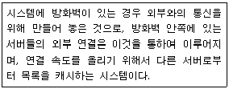
- Web Server
- Proxy Server
- Client Sever
- FTP Server
(정답률: 81%)
14. 다음 중 컴퓨터에서 문자를 표현하는 코드 체계에 대한 설명으로 옳지 않은 것은?
- BCD 코드 : 64가지의 문자를 표현할 수 있으나 영문 소문자는 표현 불가능하다.
- Unicode : 세계 각국의 언어를 4바이트 체계로 통일한 국제 표준 코드이다.
- ASCII 코드 : 128가지의 문자를 표현할 수 있으며, 주로 데이터 통신용이나 PC에서 많이 사용된다.
- EBCDIC 코드 : BCD 코드를 확장한 코드체계로 256가지의 문자를 표현할 수 있다.
(정답률: 73%)
15. 다음 중 용어에 대한 설명으로 옳지 않은 것은?
- Ubiquitous : 시간과 장소에 상관없이 자유롭게 네트워크에 접속할 수 있는 정보 통신 환경
- Wibro : 고정된 장소에서 초고속 인터넷을 이용할 수 있는 무선 휴대 인터넷 서비스
- VoIP : 음성 데이터를 인터넷 프로토콜 데이터 패킷으로 변화하여 일반 데이터망에서 통화를 가능하게 해주는 통신서비스 기술
- RFID : 전파를 이용해 정보를 인식하는 기술로 출입관리, 주차 관리에 주로 사용.
(정답률: 80%)
16. 다음 중 컴퓨터 범죄에 관한 대비책으로 옳지 않은 것은?
- 컴퓨터 바이러스 예방 및 치료에 대한 프로그램을 지속적으로 개발한다.
- 크랙커(cracker)를 지속적으로 양성한다.
- 인터넷을 통한 해킹의 방지를 위한 방화벽과 해킹방지 시스템을 설치한다.
- 정기적인 보안 검사를 통해 해킹여부를 감시하도록 한다.
(정답률: 84%)
17. 다음 중 한글 Windows XP에서 사용하는 바로 가기 키에 관한 설명으로 옳지 않은 것은?
- [Alt]+[Enter] : 선택된 개체의 등록정보 창을 표시한다.
- [Shift]+[F10] : 선택한 항목에 대한 바로 가기 메뉴를 표시한다.
- [Ctrl]+[Tab] : 실행 중인 여러 프로그램에서 활성화 전환을 한다.
- [Ctrl]+[Esc] : 시작 메뉴를 표시한다.
(정답률: 50%)
18. 다음 중 한글 Windows XP에서 사용하는 [메모장]에서 할 수 있는 기능으로 옳지 않는 것은?
- 특정 문자나 단어를 찾아서 바꾸기를 할 수 있다.
- 텍스트를 잘라내기, 복사하기, 붙여 넣기 또는 삭제를 할 수 있다.
- 글꼴의 스타일과 크기를 바꿀 수 있다.
- 편집 중인 문서에 그림을 삽입할 수 있다.
(정답률: 71%)
19. 다음 중 한글 Windows XP의 [Windows 작업 관리자] 창에서 수행할 수 있는 작업으로 옳지 않은 것은?
- 컴퓨터를 이용할 사용자 계정의 추가와 삭제를 수행할 수 있다.
- 현재 실행 중인 프로그램을 강제로 종료시킬 수 있다.
- 시스템의 CPU 사용 내용이나 할당된 메모리의 크기를 파악할 수 있다.
- 시스템을 종료하거나 다시 시작할 수 있다.
(정답률: 65%)
20. 다음 중 컴퓨터의 연산장치에 관한 설명으로 옳지 않은 것은?
- 연산장치가 수행하는 연산에는 산술, 논리, 관계, 이동(Shift) 연산 등이 있다.
- 연산 장치에는 뺄셈을 수행하기 위하여 입력된 값을 보수로 변환하는 보수기(Complementor)와 2진수 덧셈을 수행하는 가산기(Adder)가 있다.
- 누산기(Accumulator)는 연산된 결과를 일시적으로 저장하는 레지스터이다.
- 연산장치에는 다음번 연산에 필요한 명령어의 번지를 기억하는 프로그램 카운터(Program Counter)를 포함한다.
(정답률: 47%)
2과목: 스프레드시트 일반
21. 아래 시트에서 수식을 실행하였을 때 다음 중 결과 값이 다른 것은?
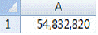
- =ROUND(A1,3-LEN(INT(A1)))
- =ROUNDDOWN(A1,3-LEN(INT(A1)))
- =ROUNDUP(A1,3-LEN(INT(A1)))
- =TRUNC(A1,-5)
(정답률: 45%)
22. 다음 중 데이터의 자동필터 기능에 대한 설명으로 옳지 않은 것은?
- 같은 열에 여러 개의 항목을 동시에 선택하여 데이터를 추출할 수 있다.
- 숫자로만 구성된 하나의 열에 색 기준 필터와 숫자필터를 동시에 적용할 수 없다.
- 같은 열에 날짜, 숫자, 텍스트가 섞여 있으면 텍스트 필터가 적용된다.
- 필터를 이용하여 추출한 데이터는 항상 레코드(행)단위로 표시된다.
(정답률: 46%)
23. 다음 VBA 배열 선언문에 대한 설명으로 옳지 않은 것은?
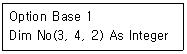
- 배열은 3차원 배열이고, 요소는 모두 24개이다.
- 배열의 첫 번째 요소는 No(0, 0, 0)이다.
- 배열 요소의 데이터 형식은 모두 Integer 이다.
- 배열은 4행 2열의 테이블이 3면으로 되어 있다.
(정답률: 47%)
24. 다음 설명 중 옳지 않은 것은?
- '채우기'에서 연속 데이터의 유형에는 선형, 급수, 날짜, 자동 채우기가 있다.
- 키보드를 이용하여 연속된 셀 범위를 선택할 때 [F8]을 사용한다.
- 마우스 포인터를 열 머리글의 왼쪽 경계선에 위치시킨 후 더블 클릭하면 열 너비는 기본 값으로 복원 된다.
- 열 머리글을 선택한 후 숨기기를 하면 열 너비가 '0'으로 된다.
(정답률: 38%)
25. 다음 시트에서 1학년 학생들의 국어 평균을 구하려고 할 때 수식으로 옳지 않은 것은?
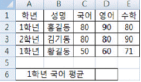
- {=AVERAGE(IF(A2:A4="1학년",C2:C4))}
- {=AVERAGE((A2:A4="1학년")*(C2:C4))}
- =AVERAGEIF(A2:A4,"1학년",C2:C4)
- =AVERAGEIFS(C2:C4,A2:A4,"1학년")
(정답률: 39%)
26. 다음 중 서식 파일에 대한 설명으로 옳은 것은?
- 일반적인 서식 파일의 확장자는 'xlsx'이고, 매크로가 포함된 서식 파일의 확장자는 'xlam'이다.
- 사용자가 작성한 서식 파일은 기본적으로 'Templates' 폴더에 저장된다.
- 기본 서식 파일을 새로 만들려면 워크시트는 'Sheets', 통합문서는 'Books'로 파일명을 지정한다.
- 행, 열, 시트 등을 숨기거나 워크시트, 셀을 변경하지 못하게 통합 문서를 보호하여 서식 파일을 작성할 수는 없다.
(정답률: 36%)
27. 다음 서식 코드를 데이터에 사용자 지정 표시 형식으로 설정 한 후 표시되는 결과로 옳지 않은 것은? (단, 열의 너비는 기본 값인 '8.38'로 설정되어있음)
- *-#,##0(서식코드) 123(데이터) -------123(결과)
- *0#,##0(서식코드) 123(데이터) *******123(결과)
- **#,##0(서식코드) 123(데이터) *******123(결과)
- **#,##0(서식코드) -123(데이터) -******123(결과)
(정답률: 51%)
28. 다음 중 '페이지 나누기'에 대한 설명으로 옳지 않은 것은?
- [페이지 나누기 미리보기]에서 수동으로 삽입된 페이지 나누기는 실선으로 표시된다.
- 행 높이와 열 너비를 변경하더라도 자동 페이지 나누기의 위치는 변하지 않는다.
- 수동으로 삽입한 페이지 나누기를 제거하려면 페이지 나누기를 페이지 나누기 미리 보기 영역 밖으로 끈다.
- 용지 크기, 여백 설정, 배율 옵션 등에 따라 자동페이지 나누기가 삽입된다.
(정답률: 49%)
29. 다음 중 차트에 관한 설명으로 옳지 않은 것은?
- 차트는 차트영역, 그림영역, 계열, 항목 축, 값 축, 범례, 제목 등의 개체로 구성되어 있다.
- 차트를 만들 때 자주 사용하는 특정 차트는 기본 차트로 설정하여 활용할 수 있다.
- 거품형 차트와 대부분의 3차원 차트는 혼합형 차트로 만들 수 없다.
- 기본 차트는 <F11>키를 누르면 현재 시트에 삽입되고,<Alt>+<F11>키를 누르면 별도의 차트 시트에 삽입된다.
(정답률: 52%)
30. 문서를 인쇄했을 때 문서의 위쪽에 '- 1 Page -' 형식으로 페이지 번호를 표시하려고 한다. 다음 중 설정 방법으로 옳은 것은?(문제 오류로 당일 시험장에서는 3번이 정답으로 발표되었으며 확정답안 발표시 1,3번이 정답으로 발표되었습니다. 여기서는 3번을 정답 처리 합니다.)
- -&[페이지 번호]& Page -
- &- [페이지 번호] Page -
- -&[페이지 번호] Page -
- &- [페이지 번호]& Page -
(정답률: 70%)
31. 아래 시트에서 수식을 실행했을 때 화면에 표시되는 결과가 다른 것은?
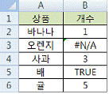
- =IFERROR(ISERR(B3),"ERROR")
- =IFERROR(ISERROR(B3),"ERROR")
- =IFERROR(ISLOGICAL(B5), "ERROR")
- =IF(ISNUMBER(B4), TRUE,"ERROR")
(정답률: 38%)
32. 다음 프로시저를 실행한 결과에 대한 설명으로 옳은 것은?
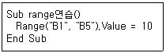
- [B1] 셀에서 [B5] 셀까지 모든 셀에 10을 입력한다.
- [B1] 셀과 [B5] 셀에 10을 입력한다.
- 1행에서 5행까지의 모든 셀에 10을 입력한다.
- 오류가 발생한다.
(정답률: 50%)
33. 아래의 시트에서 [C4:C8] 셀에 데이터를 채우려고 할 때 아래 [데이터 표] 대화상자에 입력되어야 할 값과 실행결과 [C4:C8] 셀에 설정된 배열 수식의 쌍으로 올바르게 짝지어진 것은? (단, [C3] 셀에는 수식 '=D2*A2'가 입력되어 있으며, [B3:C8] 셀을 지정한 후 [데이터]-[데이터 도구]-[가상 분석]-'데이터 표'를 실행한다.)
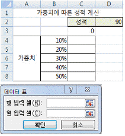
- 입력값 : [행 입력 셀]:$A$2 설정값 : {=TABLE(A2,)}
- 입력값 : [열 입력 셀]:$A$2 설정값 : {=TABLE(,A2)}
- 입력값 : [행 입력 셀]:$D$2 설정값 : {=TABLE(D2,)}
- 입력값 : [행 입력 셀]:$A$2, [열 입력 셀]:$A$2 설정값 : {=TABLE(A2,A2)}
(정답률: 38%)
34. 다음 시나리오 요약에 대한 설명으로 옳지 않은 것은?
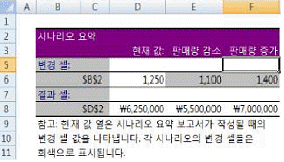
- 하나의 시나리오에 최대 64개까지 변경 셀을 지정할 수 있다.
- [B2]셀의 값이 변경될 때 변경되는 [D2] 셀의 값을 예측할 수 있다.
- [D2] 셀은 계산식이어야 하고, 변경되는 [B2] 셀은 반드시 계산식에 포함되어 있어야 한다.
- '변경 셀'로 지정한 셀에 계산식이 포함되어 있으면 자동으로 상수로 변경되어 시나리오가 작성된다.
(정답률: 36%)
35. 다음 중 엑셀을 시작할 때 자동으로 열리는 특수한 엑셀 통합 문서인 개인용 매크로 통합 문서의 이름으로 옳은 것은?
- PERSONAL.XLSB
- PERSONAL.XLAM
- PERSONAL.XLSM
- PERSONAL.XLTM
(정답률: 33%)
36. 다음과 같이 통합 문서 보호를 설정했을 경우에 대한 설명으로 옳지 않은 것은?
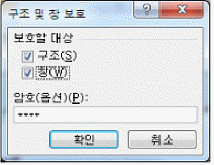
- 시트의 삽입/삭제/이동 등과 같은 작업을 할 수 없다.
- 통합 문서가 열릴 때마다 통합 문서 창을 같은 크기와 위치에 유지할 수 있다.
- 새 창/틀 고정/창 나누기 등과 같은 작업을 할 수 없다.
- 피벗 테이블 보고서, 부분합과 같은 데이터 분석작업을 할 수 없다.
(정답률: 46%)
37. 다음과 같은 특징을 갖는 차트의 종류는?
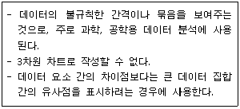
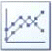
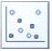
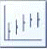
(정답률: 67%)
38. 다음 그림과 같이 부분합의 결과를 요약된 결과만 다른 곳으로 복사하기 위한 작업 과정으로 옳은 것은?
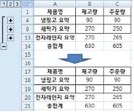
- [A1:C14] 범위를 선택 → [찾기 및 선택] → [이동 옵션] → '화면에 보이는 셀만'을 선택 → 확인 → 복사 → 붙여넣기
- [A1:C14] 범위를 선택 → [찾기 및 선택] → [이동 옵션] → '현재 셀이 있는 영역'을 선택 → 확인 → 복사 → 붙여넣기
- [A1:C14] 범위를 선택 → 복사 → 선택하여 붙여넣기 → '내용이 있는 셀만 붙여넣기' 선택 → 확인
- [A1:C14] 범위를 선택 → 복사 → 선택하여 붙여넣기 → 값 → 확인
(정답률: 50%)
39. 다음 중 수식의 결과가 옳지 않은 것은?
- =FIXED(40899.4928,-2,TRUE) → 40900
- =EOMONTH(DATE(1900,1,1), 1) → 59
- =FACT(TRUNC((PI()))) → 3
- =ROUNDUP(PI(),0) → 4
(정답률: 32%)
40. 다음은 [매크로 기록] 대화상자이다. 각 항목에 대한 설명으로 옳지 않은 것은?
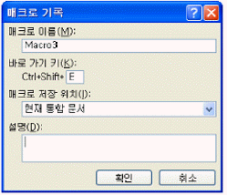
- 매크로 이름 지정 시 첫 글자는 반드시 문자로 작성해야하고, 두 번째 글자부터 문자, 숫자, 밑줄 문자(_)등을 사용할 수 있다.
- 바로 가기 키 조합 문자는 영문자와 숫자만 가능하다.
- 매크로 저장 위치는 개인용 매크로 통합문서, 새 통합 문서 그리고 현재 통합 문서 중 선택할 수 있다.
- 매크로 실행을 위한 바로 가기 키로 엑셀에서 지정되어 있는 바로 가기 키를 지정할 수도 있다.
(정답률: 47%)
3과목: 데이터베이스 일반
41. 다음 중 매크로 함수에 대한 설명으로 옳지 않은 것은?
- ApplyFilter : 쿼리 또는 테이블에서 레코드를 검색하는 기능을 수행한다.
- FindNext : 특정한 조건식을 만족하는 레코드 중에서 첫 번째 레코드를 찾아준다.
- CancelEvent : 이벤트를 취소하는 기능을 수행한다.
- GotoControl : 활성화된 폼에서 포커스를 특정 컨트롤로 이동하는데 사용한다.
(정답률: 47%)
42. 다음 중 데이터 조작어(DML : Data Manipulation Language)의 특징으로 옳지 않은 것은?
- 데이터 처리를 위하여 사용자와 DBMS사이의 인터페이스를 제공한다.
- 데이터 처리를 위한 연산의 집합으로 데이터의 검색, 삽입, 삭제, 변경 등 데이터 조작을 제공하는 언어이다.
- 절차적 조작 언어와 비절차적 조작 언어로 구분된다.
- 데이터 보안(Security), 무결성(Integrity), 회복(Recovery) 등에 관련된 사항을 정의한다.
(정답률: 56%)
43. 아래의 [상황]에서 두 테이블에 변경된 내용을 적용하기 위한 방법으로 가장 적절한 것은?
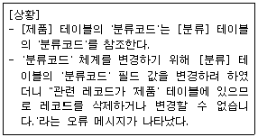
- 두 테이블간의 관계를 해제하고 [분류] 테이블의 '분류코드' 필드 값을 수정한다.
- [제품] 테이블의 '분류코드'를 먼저 수정한 후, [분류] 테이블의 '분류코드' 필드 값을 수정한다.
- 관계 편집 창에서 '관련 필드 모두 업데이트'를 체크한 후, [분류] 테이블의 '분류코드' 필드 값을 수정한다.
- 관계 편집 창에서 '관련 필드 모두 업데이트'를 체크한 후, [제품] 테이블의 '분류코드' 필드 값을 수정한다.
(정답률: 45%)
44. 다음 SQL 문의 실행 결과로 옳은 것은?
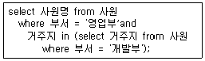
- 영업부 사원들과 다른 거주지에 사는 개발부 사원명
- 개발부 사원들과 다른 거주지에 사는 영업부 사원명
- 영업부 사원들과 같은 거주지에 사는 개발부 사원명
- 개발부 사원들과 같은 거주지에 사는 영업부 사원명
(정답률: 56%)
45. 다음 중 폼 작업 시 탭 순서에서 제외되는 컨트롤로 옳은 것은?
- 레이블
- 언바운드 개체 틀
- 명령 단추
- 토글 단추
(정답률: 45%)
46. [매출 실적 관리] 폼의 'txt평가' 컨트롤에는 'txt매출수량' 컨트롤의 값이 1,000 이상이면 우수, 500 이상이면 보통, 그 미만이면 저조라고 표시하고자 한다. 다음 중 'txt평가'의 컨트롤 원본으로 옳지 않은 것은?
- =IIf([txt매출수량]<500,"저조", IIf(txt매출수량>=1000,"우수","보통"))
- =IIf([txt매출수량]<500,"저조",IIf(txt매출수량>=500,"보통","우수"))
- =IIf([txt매출수량]>=1000,"우수",IIf([txt매출수량]>=500,"보통","저조"))
- =IIf([txt매출수량]>=500,IIf([txt매출수량]<1000,"보통","우수"),"저조")
(정답률: 39%)
47. 다음 설명에 해당하는 폼의 속성으로 옳은 것은?
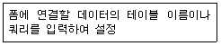
- 기본 보기
- 캡션
- 레코드 원본
- 레코드 잠금
(정답률: 40%)
48. 회원 중에서 가입일이 2010년 10월 16일 이전인 준회원을 정회원으로 변경하고자 할 때 SQL 문으로 옳은 것은? (단, 회원 테이블에는 회원번호, 성명, 가입일, 연락처, 등급 등의 필드가 있으며, 회원의 등급은 '등급' 필드에 저장되어 있다.)
- update 회원 set 등급 = '정회원' where 가입일 <= #2010-10-16# and 등급 = '준회원'
- update 회원 set 등급 = '정회원' where 가입일 <= "2010-10-16" and 등급 = '준회원'
- update 회원 set 등급 = '정회원' where 가입일 <= #2010-10-16#
- update 회원 set 등급 = '정회원' where 가입일 <= "2010-10-16"
(정답률: 49%)
49. 다음 중 보고서의 각 부분에 대한 설명으로 옳은 것은?
- 보고서 머리글 : 보고서의 모든 페이지 상단에 표시된다.
- 구역 선택기 : 보고서를 선택하거나 보고서의 속성을 지정할 때 사용한다.
- 그룹 바닥글 : 그룹별 요약 정보를 각 그룹의 하단에 표시한다.
- 페이지 머리글 : 실제 데이터가 반복적으로 표시되는 부분이다.
(정답률: 57%)
50. 다음과 같이 페이지 번호 속성을 설정하였다. 전체 페이지 수가 10페이지인 경우 3번째 페이지의 번호 표시 형식으로 옳은 것은?
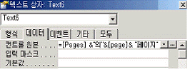
- 10의3페이지
- 3의 10페이지
- 3페이지
- 3-10페이지
(정답률: 74%)
51. 다음 중 폼을 작성할 수 있는 [만들기]탭 [폼]그룹에서 선택 가능한 명령에 해당하지 않는 것은?
- 폼 디자인
- 여러 항목
- 매크로
- 피벗 차트
(정답률: 48%)
52. 그림과 같이 '유효성 검사 규칙'과 '유효성 검사 텍스트'를 설정하였다. 다음 중 이에 대한 설명으로 옳은 것은?
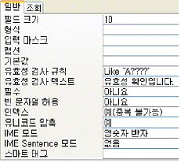
- 입력되는 값은 반드시 A로 시작하면서 5자 이내이어야 하고, 규칙에 맞는 값이 입력된 경우에는 "유효성 확인입니다."라는 메시지가 나타난다.
- 입력되는 값은 반드시 A로 시작하면서 5자 이내이어야 하고, 규칙에 맞지 않는 값이 입력된 경우에는 "유효성 확인입니다."라는 메시지가 나타난다.
- 입력되는 값은 반드시 A로 시작하면서 5자이어야 하고, 규칙에 맞는 값이 입력된 경우에는 "유효성 확인입니다."라는 메시지가 나타난다.
- 입력되는 값은 반드시 A로 시작하면서 5자이어야 하고, 규칙에 맞지 않는 값이 입력된 경우에는 "유효성 확인입니다."라는 메시지가 나타난다.
(정답률: 43%)
53. 다음 중 테이블의 이름을 지정하는 방법에 대한 설명으로 옳지 않은 것은?
- 테이블 이름과 쿼리 이름은 동일하게 설정할 수 없다.
- . ! ' [] 과 같은 특수문자는 사용할 수 없다.
- 테이블 이름에 공백은 포함시킬 수 없다.
- 테이블 이름과 필드 이름은 동일하게 설정할 수 있다.
(정답률: 34%)
54. 다음 중 폼을 열자마자 'txt조회' 컨트롤에 커서(포커스)를 자동적으로 위치하게 하는 이벤트 프로시저는?
- Private Sub txt조회_Click()
txt조회.AutoTab = True
End Sub - Private Sub txt조회_Click()
txt조회.SetFocus
End Sub - Private Sub Form_Load()
txt조회.AutoTab = True
End Sub - Private Sub Form_Load()
txt조회.SetFocus
End Sub
(정답률: 40%)
55. 회원목록 보고서는 '지역' 필드를 기준으로 정렬되어 있다. 동일한 지역인 경우에 지역명이 맨 처음에 한번만 표시되도록 하기 위한 속성으로 옳은 것은?
- 확장가능 속성을 '아니오'로 설정
- 누적 합계 속성을 '예'로 설정
- 중복내용 숨기기 속성을 '예'로 설정
- 표시 속성을 '아니오'로 설정
(정답률: 76%)
56. 다음 두 개의 테이블 사이에서 외래 키(Foreign Key)는 무엇인가? (단, 밑줄은 각 테이블의 기본 키를 표시함)
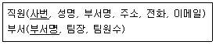
- 직원 테이블의 사번
- 부서 테이블의 팀원수
- 직원 테이블의 부서명
- 부서 테이블의 팀장
(정답률: 71%)
57. [성적] 테이블에서 '언어' 필드와 '수리' 필드를 더한 후 합계라는 이름으로 표시하고자 한다. 다음 중 SQL문의 괄호 안에 들어갈 내용으로 옳은 것은?
- NAME IS 합계
- ALIAS 합계
- AS 합계
- TO 합계
(정답률: 56%)
58. 다음 중 '영동1단지'에서 숫자로 된 단지정보 '1'을 추출하기 위한 함수로 옳은 것은?
- left("영동1단지", 3)
- right("영동1단지", 3)
- mid("영동1단지", 3, 1)
- instr("영동1단지", 3, 1)
(정답률: 51%)
59. 다음 중 다른 데이터베이스의 원본 데이터를 연결 테이블로 가져온 테이블과 새 테이블로 가져온 테이블에 대한 설명으로 옳지 않은 것은?
- 연결 테이블로 가져온 테이블을 삭제하면 연결되어 있는 원본 데이터베이스 테이블도 삭제된다.
- 연결 테이블로 가져온 테이블을 삭제해도 원본 테이블은 삭제되지 않고 연결만 삭제된다.
- 새 테이블로 가져온 테이블을 삭제해도 원본 테이블은 삭제되지 않는다.
- 새 테이블로 가져온 테이블을 이용하여 폼이나 보고서를 생성할 수 있다.
(정답률: 69%)
60. 다음 중 보고서 작성시 그룹화와 관련된 사항 중 옳지 않은 것은?
- 그룹화된 레코드들을 내부적으로 다시 그룹화 할 수 있다.
- 날짜/시간 필드를 그룹화하면 연도/분기/월 등 세부적인 그룹화가 가능하다.
- 텍스트 필드를 그룹화하면 전체 필드의 값이 일치하는 경우에만 같은 그룹으로 인식한다.
- 그룹별로 머리글과 바닥글을 지정할 수 있다.
(정답률: 55%)